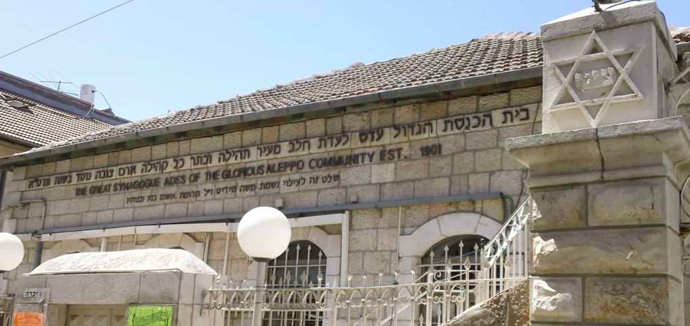
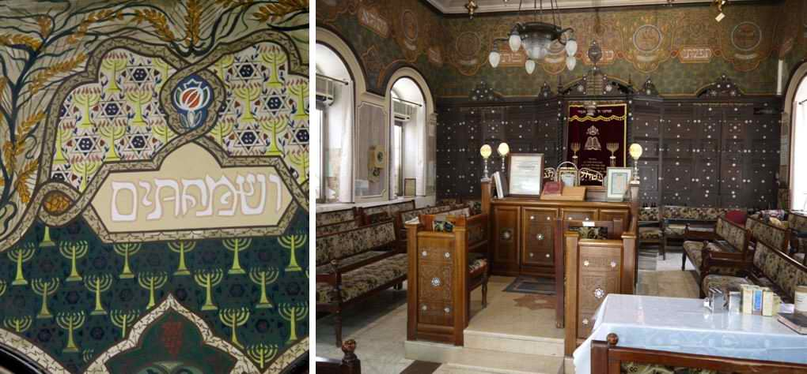

Начало СИОНИСТСКОГО ИСКУССТВА. Адес синагога
Лет двадцать тому назад, в рамках курса Еврейского университета в Иерусалиме, что на горе Скопус (ивр. хар а-Цофим) я прослушал выездную лекцию в одной из старейших и красивейших синагог нового времени в Иерусалиме. К сожалению, в те времена мой иврит все еще делал первые неровные шаги и потому ничего не говорящее мне название этой синагоги в своих записях я упустил.

Совсем недавно ко мне пришла благословенная мысль опубликовать пост с фото (см. фото выше). Для тех, кто не в теме, - это старинная, если можно назвать старинным нечто из самого начала прошлого века, печать Академии художеств в Иерусалиме «Бецалель», которая, кстати, находится ныне на той же горе Скопус в непосредственной близости от Еврейского университета. Так вот на фото изображен ковчег завета – рисунок Бориса Шаца, основателя Школы еврейского искусства «Бецалель», и по сей день представляющий официальную печать этой самой школы.
Итак, я опубликовал эту печать и сопроводил ее просьбой:

«Братья и сестры ИЕРУСАЛИМОВЕДЫ, помогите бевакаша! Очень нужно! Мне необходимо узнать название синагоги. Кажется, это сефардская синагога в Иерусалиме. Арон а-Кодеш (шкаф для хранения свитков Торы) в ней отделан орехом и покрыт восточным орнаментом с инкрустацией перламутра и жемчуга. То, что особенно в ней важно для меня, она расписана одним из студентов Бейт Мидраша ле Оманут Ехудит "Бецалель". Это одна из первых синагог, где на росписях фигурируют гербы колен израилевых».

интерьер синагоги Адес
В тот же день Алекс Бленд ответил мне, что речь идет о синагоге в Нахалот, совсем недалеко от ул. Агрипас. Было время, он водил туда народ, ранним утром, на "посмотреть".
Спрашивается: когда еврей радуется? Когда сначала потеряет, а потом найдет. Радости моей не было предела. Наконец, она вновь предстала передо мной.
Продолжение читайте в следующей статье.
автор Эфраим Калиш /TORAART/